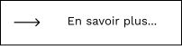

LARTISTE
LARTISTE
LARTISTE
LARTISTE
Bienvenue sur cette exposition des artistes du réalisme social
Le réalisme social est le terme utilisé pour le travail produit par des peintres, des graveurs, des photographes, des écrivains et des cinéastes qui vise à attirer l'attention sur les conditions sociopolitiques réelles de la classe ouvrière comme moyen de critiquer les structures de pouvoir derrière ces conditions. Bien que les caractéristiques du mouvement varient d'une nation à l'autre, il utilise presque toujours une forme de réalisme descriptif ou critique.

Fondation Cartier, 261 Bd Raspail, 75014 Paris
Tous les jours de 11h à 20h, sauf le lundi. Nocturne le mardi, jusqu'à 22h
du 13 avril au 23 juin 2023
